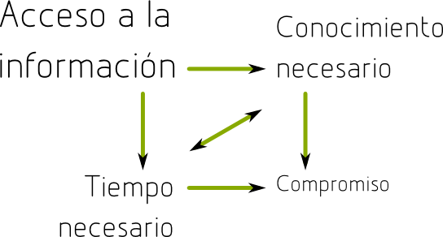

Reducción de las brechas de acceso a la información a
partir del intercambio libre de recursos de aprendizaje
Carlos Eduardo Caballero Burgoa
cijkb.j@gmail.com
Descripción del problema
- Métodos informales para el intercambio de recursos.
- Escasos canales formales de adquisición de
recursos.
- Costosos procedimientos para la organización de la
información.
Definición del problema
Los deficientes métodos de organización de la información;
dificultan a los estudiantes adquirir el conocimiento que
ellos se han planteado.
Objetivo general
Minimizar los problemas de acceso a la información para
mejorar los métodos de adquisición de conocimiento.
Objetivos específicos
- Facilitar la clasificación e intercambio de recursos
para simplificar los procesos cotidianos inherentes en
estas tareas.
- Ampliar los canales de intercambio de recursos entre las
personas para mejorar la disponibilidad de estos entre
los usuarios.
- Agilizar los procesos de publicación, y clasificación de
recursos para simplificar muchas de las tareas
necesarias de administración.
Los problemas pueden ser de 4 tipos:

Clasificación
Busqueda
Intercambio
Automatización
Metodos de clasificación utilizados en biblioteconomía
- Sistema de clasificación decimal de Dewey.
- Sistema de clasificación colonada.
Se definieron dos tipos de clasificaciones:
- Taxonomias:
- Cuando un libro que pertenezca a ese catalogo,
unicamente pueda estar en una de sus ramas.
- Folcsonomias
- Cuando un libro que pertenezca a ese catalogo, puede
estar en una o varias de sus ramas.
Motor de busqueda Lucene.
Ontología
- título
- autor
- editorial
- idioma
- año
- nombre de archivo
- Identificación unica de un documento
- SHA256
Canales de acceso:
- HTTPS
- FTP
- RSYNC
- UDEV - USB
- P2P
- Automatización de la publicación.
- Generación de la meta-información.
- Reportes sobre los recursos compartidos.